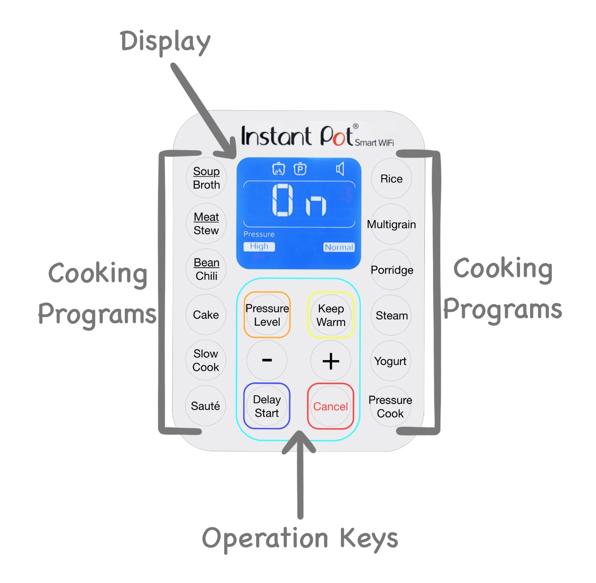

Personas: Instant Pot
Interface
The Instant Pot’s control panel is made up of three key interactive components: the Display, Cooking Programs, and Operation Keys. This control panel allows the user to initiate, customize, and cancel a range of different cooking processes.
Display is the screen that shows the status of the device: its top margin contains icons that indicate the processes currently running; the lower margin contains information about the current pressure settings; the large text in the middle displays either the status of the device or the remaining time left in a programmed cooking process.
The Cooking Programs are all of the different cooking options that the user can choose from, each with a default time and pressure settings that the user can customize to their needs.
The Operation Keys are buttons for important actions the user can take such as cancelling the cooking process, keeping food warm after the selected cooking program has ended, delaying the start of the cooking process, changing the level of pressurization, or adjusting the cooking time.
Observations
Key Observations:
- Not using a start button to initiate a process is confusing.
- New users can easily follow a sequence of actions if given the right prompts.
- Icons without labels are not always clear or helpful.
- Labels are powerful: users assume that buttons will do exactly what the labels indicate.
- Users can use a device correctly and not know it if the device does not provide positive feedback.
Interview Questions and Answers
- How did you start the pressure-cooking process?
- How confident are you that you started the pressure-cooking process correctly?
- Is the order in which buttons need to be pushed clear?
- Does the information on the display screen make sense to you?
- If you wanted to make cake, for example, how would you do it?
Lena first took a minute to look at the display and all of the different button options. Although the Instant Pot did not have a lid on, she proceeded to push the “Pressure Cook” button, ensure the pressure level was what she desired, and hit “+” until the display indicated the amount of time she wished to cook for.
Sadie placed the lid on the Instant Pot (but did not lock it into place), pushed the “Pressure Cook” button, and hit “+” until the display indicated the amount of time she wished to cook for.
Allan placed the lid on the Instant Pot and locked it into place, and checked to be sure that all of the valves on the lid were in their unpressurized positions. He pushed the “Pressure Cook” button, ensured the pressure level was what he desired, and hit “+” until the display indicated the amount of time he wished to cook for.
Lena was not sure that she had started it correctly because the display said “On” but there was no obvious indication that the process had begun and the pot was pressurizing. She noticed that two icons, a pot with fire and a pot with the letter ‘P’ in it, had been added to the top margin of the display, and concluded that this must indicate that she had acted correctly and the process had indeed been initiated. Lena admitted that she was guessing what to do, but noted that she never got to the point where she felt like she had no clue what was going on.
Sadie did not know if she had started the process correctly. Like Lena, she was confused that the display read “On” and that it did not clearly indicate that a new process had begun. She remembered that the display had also read “On” when she plugged the Instant Pot in initially, and thus became more certain that she had not correctly programmed the cooking process to start.
Allan was very certain that he had started the process correctly. He knew from experience that after locking the lid into place, ensuring that all of the lid valves were in their unpressurized positions, and programming the cooking time, the Instant Pot displays the word “On” until it is pressurized, after which time the remaining cooking time is displayed instead. He also knew from experience that the two icons that Lena noticed in the top margin of the display indicate that the pot is warming up and pressurizing.
Lena felt that the order in which the buttons should be pressed was clear. She made decisions at every step based on what were the most logical buttons to click. When in doubt, she left options and preferences at what she assumed were default settings. Lena noted that she liked the color-coding of the icons, especially how the “Cancel” button was red, and that it helped clarify their functionality.
Sadie was very confused by the fact that there was no start button. Although she chose the correct buttons to initiate the pressure-cooking process, she remained unsure what to do after setting the pressure and time preferences since there was no option to ‘start’ the process (10 seconds after the preferences are set, pressurization will begin as long as the lid is locked into place and the vents are in the correct positions).
Given his experience with this device, Allan thought the order in which to push the buttons was very clear. He noted that it would be challenging for new users to understand that the pressurization process initiates after preferences are set, and that no ‘start’ button needs to be pushed.
Lena was confused that the display screen read “On” after pressurization had begun. She was not certain what the icons in the top margin referred to, but made correct assumptions about their meanings based on what she suspected was happening.
Like Lena, Sadie was confused that the display screen read “On” after pressurization had begun. She did not immediately notice the icons in the top margin, and when she did, she assumed that they had been there all along and did not indicate anything relevant about the Instant Pot’s status.
Allan understood everything on the display since he was familiar with the system. He noted how one of the icons in the top margin of the display indicates the inner mechanical status of the Instant Pot and is unnecessary for the user to understand - this likely adds a level of confusion to the user experience.
Lena said she would push the “Cake” button and leave all of the preferences as they are, since she assumes that these are default preferences and that they must therefore be the most correct choices.
Sadie said she would push the “Cake” button and then change the preferences based on the quantity and type of cake she is looking to make.
Allan said he would choose the “Pressure Cook” button, because all of the buttons labeled with specific foods are just presets that all use the functionality of the “Pressure Cook” button, and then adjust the preferences to reflect the type and quantity of cake he intended to make. He noted that this method would be just as fast as choosing the “Cake” button and changing the preferences, since both require the user to alter the settings based on their desired cake.
Empathy Maps and Persona Descriptions

Chris is a sophomore at Brown University who uses many different forms of technology on a daily basis. He is just learning how to cook and has bought an Instant Pot to help him cook efficiently during his breaks between classes.
Although he is very tech-savvy, Chris is not familiar with the Instant Pot’s particular interface, and also has not had a lot of cooking experience. He is confused when trying to start the cooking process because there is no ‘start’ button. After learning a little more about the device, he also does not understand why the interface never instructed him to put the lid in the locked position and ensure the values are in the correct position. Perhaps worst of all, Chris finds that the Instant Pot does not notify him when pressurization is not working; instead, the display will continue to read “On” but never change to the remaining cooking time. He realizes that if he becomes too discouraged by the device’s perceived complexity (along with the time it takes to prepare ingredients), he may opt to use Snackpass rather than spend time trying to prepare meals for himself.
Chris represents users who are new to the Instant Pot interface. Although he is young and therefore very familiar with smart devices, he still struggles to decipher the way this interface correlates to the device’s functionality. If he reads the manual his questions will be answered, but until then he will remain unsure if he is correctly using the Instant Pot and taking advantage of all of its customizable features.

Aynsley is a 65-year woman who loves to cook and has been cooking her whole life. She bought an Instant Pot six months ago, and has been enjoying using it to efficiently make her meals.
While Aynsley is sometimes frustrated by smart devices, she has been using the Instant Pot long enough to understand how it works. She learned how to use one of the buttons - the “Sauté” functionality - and has not tried using any of the others because she felt that learning just one was difficult enough. She has justified this decision not to explore the other functionalities by reassuring herself that sautéed meals are her favorites anyway. Each time Aynsley uses the Instant Pot, she uses it the exact same way as the time before, so as to use it correctly and not forget how it works.
Aynsley represents an older user whose passion for cooking has inspired them to dive into the world of smart devices, but whose lack of exposure to other new technologies makes this Instant Pot interface seem intimidating. Users like Aynsley tend to (at least initially) require more assistance when learning to use smart devices. Often these users’ excitement for what a technology can do strongly motivates their drive to understand it.
Storyboard
The following is a storyboard depicting Chris’ experience as a user.